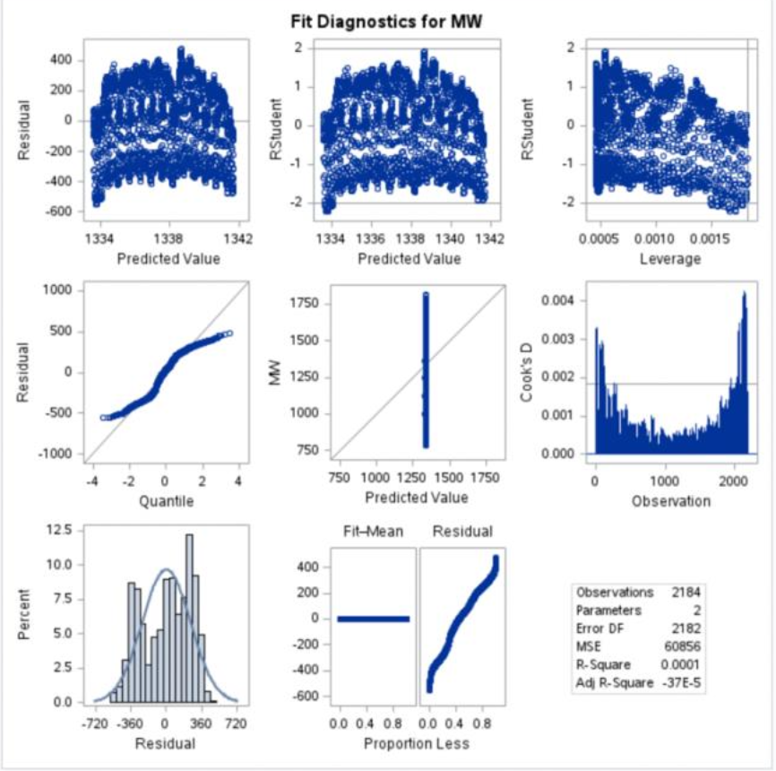
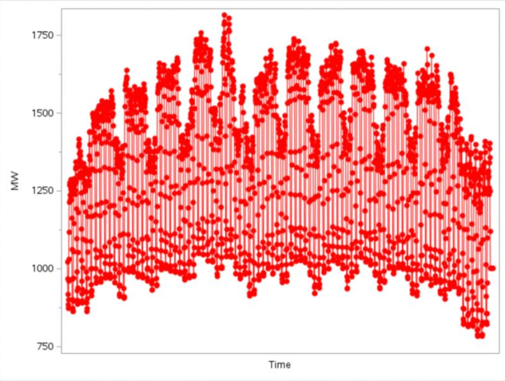
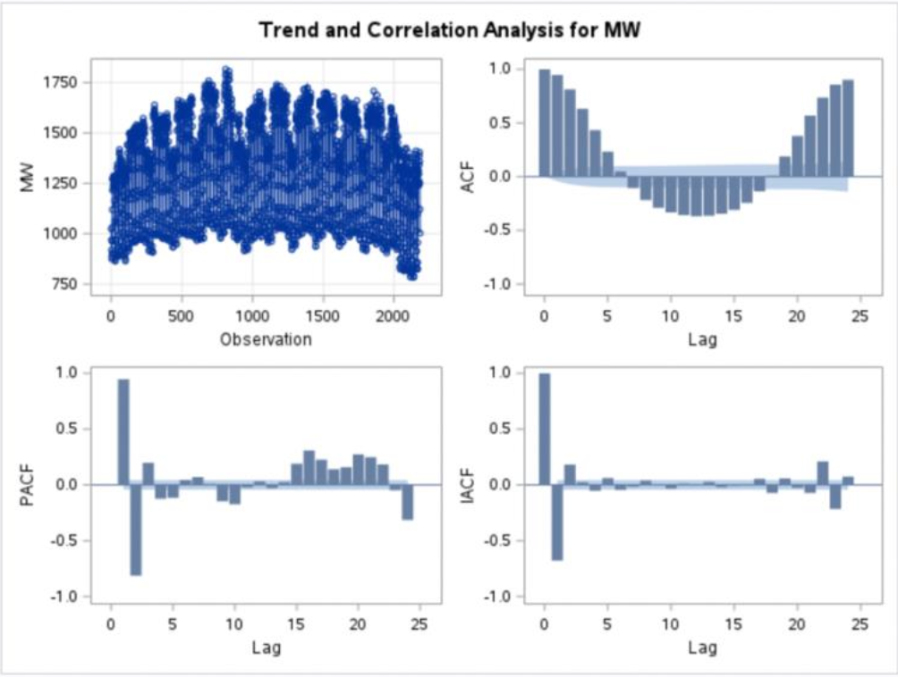
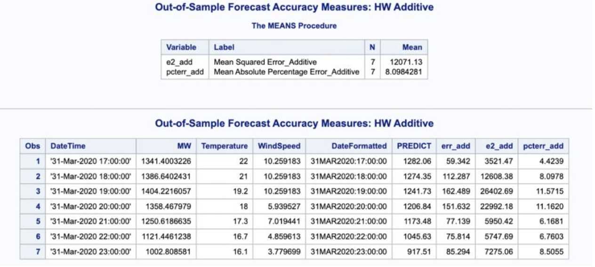

⚡ Electricity Demand Forecasting in New Zealand (North Island, 2020)
Overview
This project analyzes hourly electricity demand data from the North Island of New Zealand (Jan–Mar 2020).
The goal was to evaluate different time series forecasting models — including regression, exponential smoothing, ARIMA, and ARIMAX — and assess their predictive accuracy.
Data Organization
- Dataset: Hourly electricity demand (MW), 1 Jan 2020 – 31 Mar 2020.
- Main Features:
- Stable demand (1000–1800 MW) without long-term trend.
- Clear daily diurnal cycles and weekly seasonal patterns.
- Occasional spikes/drops linked to weather events or holidays.

Figure 1. Hourly demand shows strong daily and weekly seasonality.
Time Series Regression
- Model performance was weak:
- R² = 0.0001 → poor explanatory power.
- MSE = 246.7 → high error.
- DW = 0.104 → strong positive autocorrelation in residuals.
- Conclusion: Regression did not capture autocorrelation or seasonality.

Figure 2. Regression residuals highlight strong autocorrelation.
Exponential Smoothing (ESM)
- Estimated level parameter = 0.999 (very dependent on previous observation).
- Parameters statistically significant (p < 0.001).
- Limitation: Cannot capture seasonal/complex demand patterns.

Figure 3. ESM produces forecasts but misses seasonal dynamics.
ARIMA Models
- Explored differencing stages and candidate models:
- ARIMA(1,1,0) and ARIMA(1,1,1)
- Forecast results:
- Captured short-term trends.
- Confidence intervals widened rapidly, reducing long-term accuracy.

Figure 4. ARIMA forecasts with wide confidence intervals.
ARIMAX Models
- Incorporated exogenous variables: Temperature & Wind Speed.
- Findings:
- Improved short-term performance compared to ARIMA.
- Forecast uncertainty still grew over time.

Figure 5. ARIMAX with exogenous variables improves short-term accuracy.
Out-of-Sample Forecasting
- Held out last 7 days as test set.
- Compared Holt-Winters Additive vs ARIMA(0,1,0)(1,0,0).
| Model | MSE | MAPE |
|---|---|---|
| Holt-Winters Additive | 18,717 | 11.00% |
| ARIMA(0,1,0)(1,0,0) | 36,865 | 16.39% |
✅ Holt-Winters additive outperformed ARIMA for this dataset.

Figure 6. Holt-Winters additive model produced more accurate forecasts.
Conclusion
- Regression: Too simple, poor fit.
- ESM: Limited predictive power for seasonal data.
- ARIMA/ARIMAX: Good for short-term, but uncertainty grows.
- Holt-Winters Additive: Best performance in accuracy and stability.
📌 Insight: Seasonal models (like Holt-Winters) are better suited for electricity demand forecasting where daily & weekly cycles dominate.